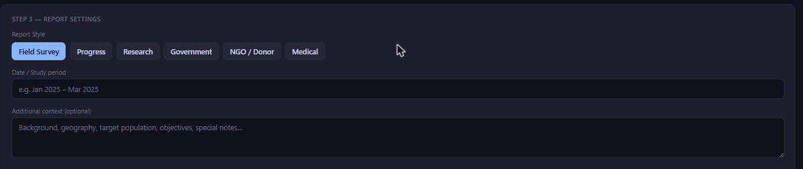

Ask any field team how they get from raw survey data to a finished report, and you'll usually hear one of two answers. The first: "We export to Excel and someone builds pivot tables for a week." The second, more worrying answer: "The field coordinator writes up what she remembers from the field visits." Both answers point to the same missing piece — a proper, disciplined tabulation and analysis step that sits between data collection and the narrative document a donor, ministry, or board actually reads.
This middle step doesn't have a catchy name, which is part of why it gets skipped. It isn't "cleaning" (that should already be done). It isn't "writing" (that comes after). It's the work of turning a spreadsheet of rows and columns into a small set of defensible, interpretable numbers — cross-tabs, frequency distributions, subgroup comparisons — that a report can actually stand on. Skip it, or do it carelessly, and you get one of two failure modes: reports that took three weeks to produce because someone was manually filtering and pivoting the same dataset a dozen different ways, or reports that took three hours to produce because someone wrote a narrative straight from memory and gut feel, with numbers bolted on afterward to make it look rigorous.
The four-stage pipeline that actually works
Every credible survey report — whether it's a district-level education baseline or a CSR program endline for a donor board — passes through the same four stages, in the same order. Reordering or merging them is where reports go wrong.
- Clean. Deduplicate respondents, resolve inconsistent category labels, flag and handle outliers and out-of-range values, confirm required fields aren't silently missing.
- Tabulate / cross-tabulate. Turn cleaned rows into frequency tables and cross-tabs — the specific question of "what does the data say" broken down by the subgroups that matter (district, gender, age band, arm/control, round).
- Interpret. Read the tabulated numbers against sample size, variance, and known confounders. Decide what's actually a finding versus what's noise.
- Narrate. Write the report — prose, context, recommendations — anchored to the specific tabulated numbers from stage 2, verified in stage 3.
The step teams cut is almost always stage 2 combined with stage 3 — tabulation and interpretation. It's tedious, it requires someone comfortable with a spreadsheet or statistical tool, and under deadline pressure it's the easiest thing to compress into "eyeball the raw data and write what seems true." That compression is exactly where bad reports come from.
Failure mode one: the average that hides its own outliers
The most common way a rushed report goes wrong is reporting a mean without ever looking at the distribution behind it. Say a livelihoods program tracks household monthly income across 340 respondents in a district, and the average comes out to ₹14,200 — a number that looks like solid progress against a ₹9,000 baseline. Written into a report as-is, that's a strong headline. But if five households in the sample report incomes above ₹80,000 (data entry errors, a misunderstood question, or genuinely atypical outlier households), those five rows alone can pull a district-wide mean up by fifteen to twenty percent. The honest number — median income, or a trimmed mean with the outliers flagged and either corrected or excluded with a documented reason — might show income barely moved.
This isn't a hypothetical edge case; it's close to the default behavior of income, expenditure, and any self-reported numeric field in field surveys. A tabulation step that includes a basic outlier check — flagging values beyond a few standard deviations, or simply sorting the column and eyeballing the top and bottom 1% — catches this before it becomes a headline number in a donor report. Skipping straight from raw export to narrative means the outlier check never happens, because nobody stopped to look at the distribution before writing "average income increased by 58%."
Failure mode two: findings dressed up from noise
The second failure mode is subtler and more common in reports written by people who are good writers but not trained in survey statistics. A cross-tab shows that respondents in one block reported a slightly higher rate of latrine usage than respondents in a neighboring block — say 71% versus 64%. Written into a narrative, that seven-point gap becomes "Block B shows notably stronger sanitation outcomes than Block A, suggesting the community mobilization approach used there is more effective." The trouble is that if each block only has 40-50 respondents, a seven-point gap is well within the range you'd expect from random sampling noise alone — it isn't a "finding," it's normal variance around what might be an identical true rate in both blocks.
Proper tabulation practice — even something as basic as checking cell sizes before writing a comparative claim, or running a quick significance check when the sample allows it — prevents this. When the underlying tabulation is saved and visible, anyone reviewing the report before it goes out can trace the "notably stronger" claim back to n=44 and n=47 cells and ask the obvious question: is this actually a finding? When the narrative was written straight from a general impression of the raw export, that check never happens, because there's no saved tabulation to check it against.
Failure mode three: causation smuggled into a cross-tab
The third and most damaging failure mode is drawing a causal claim from what is, structurally, a purely descriptive cross-tab. A cross-tab of "training attendance" by "business revenue growth" might show that respondents who attended more training sessions also report higher revenue growth. That's a real, defensible descriptive finding. What a rushed report often does is upgrade it silently to "the training program drove revenue growth" — a causal claim the cross-tab cannot support on its own, because respondents who attend more training sessions may simply be more motivated, better resourced, or more engaged entrepreneurs to begin with, independent of the training itself.
If a report sentence uses "drove," "caused," "led to," or "resulted in" and the underlying evidence is a two-variable cross-tab from a single round of observational data, that's a claim the data hasn't earned. A defensible version reads: "Respondents who attended more training sessions also reported higher revenue growth (a descriptive association); this survey design cannot establish whether training caused the difference."
This distinction matters enormously in evaluation contexts, where a government reviewer or academic referee will read a causal claim and immediately ask about the counterfactual, selection effects, and confounding — questions a purely cross-sectional cross-tab cannot answer. Interpretation is the stage where someone with survey-methods literacy sits with the tabulated numbers and decides which claims the design actually supports, before a single sentence of narrative gets written.
What a saved tabulation-to-narrative handoff actually looks like

The practical fix for all three failure modes is the same: don't let tabulation and narrative live in separate tools connected only by copy-paste. When a cross-tab is built in one spreadsheet, screenshotted or manually retyped into a Word document, and then edited by two more people before it reaches a final report, every one of those handoffs is a place where the number drifts from the source, the outlier gets forgotten, or the sample size caveat gets dropped for the sake of a cleaner sentence.
FieldGovern's Analyzer module (TableForge) is built specifically to keep this handoff intact. Cross-tabs and frequency tables built in Analyzer — including AI-suggested tables that flag the subgroup breakdowns worth checking — carry their sample sizes and source filters with them. When those same tabulations feed directly into FG Writer's report generator, the narrative is drafted against the actual saved numbers, not a screenshot or a half-remembered figure from three weeks earlier. Writer offers six report styles — Field Survey, Progress, Research, Government, NGO-Donor, and Medical — but every style pulls from the same underlying tabulation, so switching the audience-facing format doesn't mean re-deriving the numbers from scratch or risking a mismatch between the version a donor sees and the version a government reviewer sees.
That matters more than it sounds. A program that reports different topline numbers to a state department and to a funder — not from dishonesty, but because two different people manually cross-tabbed the same raw data slightly differently — creates exactly the kind of credibility problem that undermines an otherwise strong program. Anchoring every report style to one saved tabulation closes that gap structurally, rather than relying on someone remembering to double-check.
A practical checklist before any report goes out
Why Excel-only pipelines break down as programs scale
Excel is a genuinely capable tool for tabulation, and plenty of small, well-run field programs get by on it. The problem isn't Excel itself — it's what happens to an Excel-based tabulation workflow as a program grows past a single round, a single district, or a single analyst. A pivot table built for a 300-respondent pilot round works fine when one person owns the file and remembers every filter they applied. The same approach becomes fragile once a program scales to multiple rounds, multiple districts, and multiple people touching the workbook, because nothing about a spreadsheet enforces that the cross-tab someone builds in month three uses the same cleaning rules and the same outlier handling as the one built in month one.
In practice this shows up as version drift: three analysts each maintain their own copy of "the" cross-tab workbook, each slightly out of sync with the latest data pull, and nobody is quite sure which version fed the last report that went to the donor. It also shows up as silent filter carryover — a filter applied for one specific cross-tab (say, restricting to female-headed households) accidentally stays active when the same pivot table is reused for a different, unrelated breakdown two weeks later, quietly producing a wrong number that looks entirely plausible. Neither failure is a skills problem with the analyst; both are structural problems with using a general-purpose spreadsheet as a system of record for tabulations that multiple reports and multiple people depend on. A tabulation tool that saves each cross-tab as a named, dated, re-runnable object — rather than a mutable pivot table living inside one person's local file — removes both failure modes by construction, not by asking people to be more careful.
Why this is a workflow problem, not a skills problem
It's tempting to frame all three failure modes above as a training gap — "our team just needs a statistics refresher." That's rarely the real bottleneck. Most M&E officers and field coordinators in India's NGO and government evaluation ecosystem know, in principle, that outliers distort averages and that small cells produce noisy comparisons. The actual problem is time pressure combined with tooling that makes the careful path slower than the careless one. When building a clean cross-tab in Excel takes forty-five minutes of pivot-table wrangling per subgroup, and a report is due in two days, the corner that gets cut is exactly the outlier check and the cell-size sanity check — not because anyone decided accuracy doesn't matter, but because the tool made the rigorous path expensive.
The fix, accordingly, isn't a longer methods training — it's a tabulation-to-narrative pipeline where the rigorous path and the fast path are the same path. When cross-tabs are one click away from a shared dataset, and a report draft is one more click from a saved cross-tab, the corner-cutting incentive disappears because there's no longer a slower, more careful alternative being skipped under deadline pressure. That's the actual argument for treating tabulation as a first-class step in the pipeline, with dedicated tooling, rather than a manual task squeezed between "data collection is done" and "the report is due Friday."
Stop losing the middle step
Build cross-tabs in Analyzer, then generate a report from FG Writer that's anchored to the same saved numbers — no copy-paste, no drift between drafts.
Start Free Trial